La prospettiva come simulazione dell’esperienza
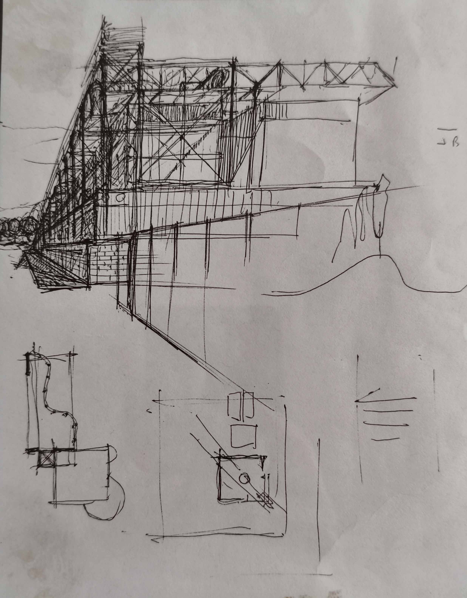

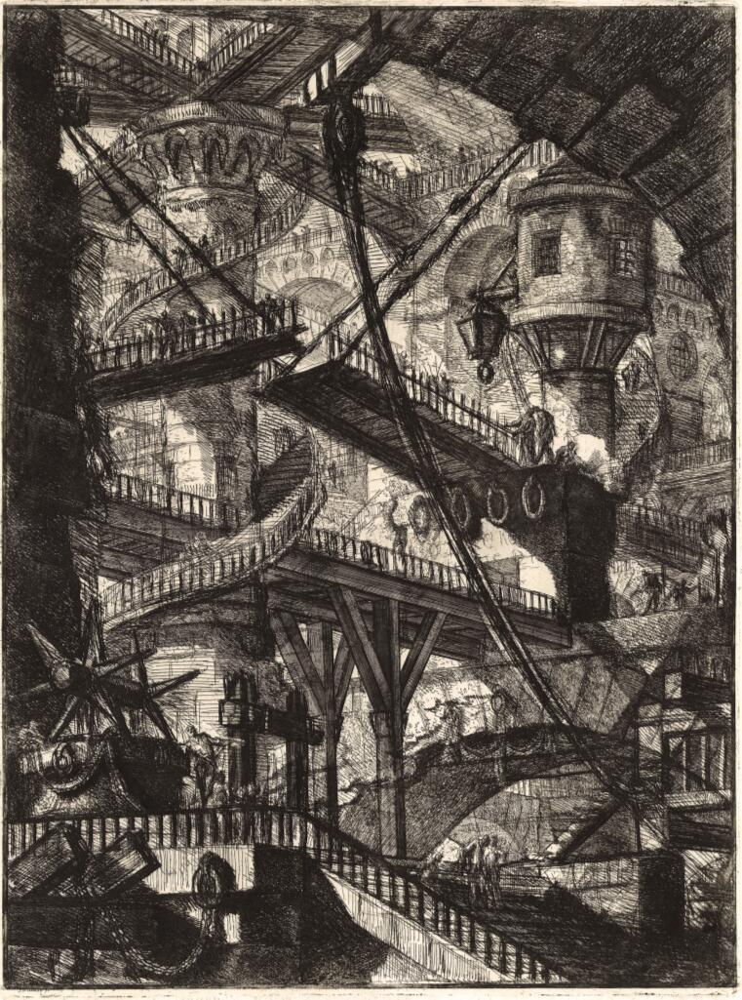
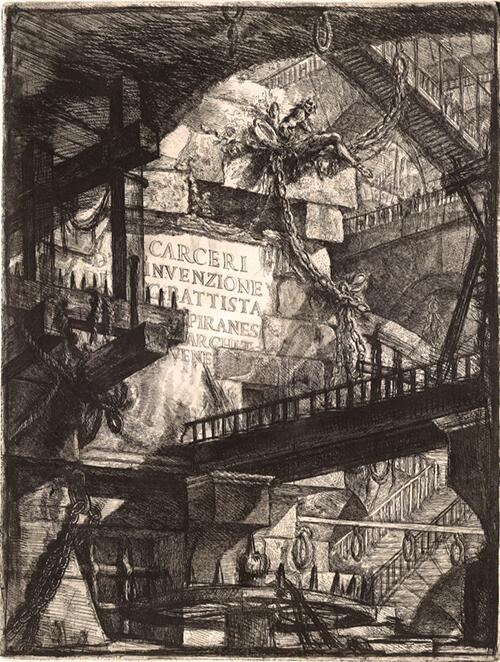
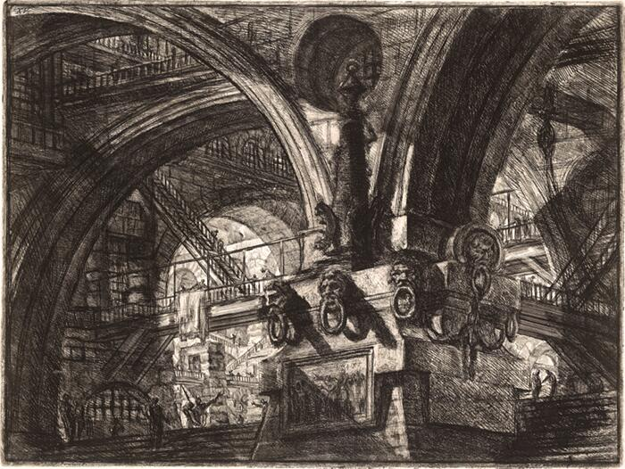
Le Carceri d’Invenzione di Giovanni Battista Piranesi non sono vedute architettoniche, ma veri e propri esperimenti percettivi. In queste incisioni la prospettiva non serve a ordinare lo spazio, bensì a metterlo in crisi, trasformandolo in un campo instabile di forze visive, tensioni e movimenti contraddittori.
Piranesi spinge il dispositivo prospettico oltre la sua funzione classica di chiarificazione. Lo spazio non si lascia mai comprendere in un unico colpo d’occhio: rampe che si incrociano senza logica apparente, scale che conducono a livelli inconciliabili, ponti sospesi che non stabiliscono un percorso univoco. Il movimento è suggerito dalla moltiplicazione dei cammini possibili, ma nessuno di essi conduce a una destinazione riconoscibile. La profondità non coincide con una distanza misurabile: diventa una forza che trascina l’occhio, lo disorienta, lo costringe a continui aggiustamenti percettivi.
La luce svolge un ruolo decisivo in questo processo. Fasci luminosi improvvisi illuminano porzioni limitate dello spazio, mentre vaste aree restano immerse nell’ombra. Il chiaroscuro non chiarisce la struttura dell’ambiente, ma ne amplifica l’ambiguità, suggerendo che ciò che è visibile è solo una parte di un organismo spaziale molto più esteso e inaccessibile. La prospettiva non costruisce un interno stabile, ma un ambiente che sembra espandersi indefinitamente oltre i limiti del foglio.
Per la scheda 8.5, le Carceri mostrano con estrema chiarezza che la prospettiva non è semplicemente uno strumento di rappresentazione, ma un mezzo di verifica dell’esperienza spaziale. Piranesi utilizza la prospettiva per testare cosa accade quando la logica dello spazio perde stabilità e diventa esperienza di movimento, tensione e profondità estrema. La prospettiva non spiega lo spazio: lo sottopone a una prova percettiva radicale.

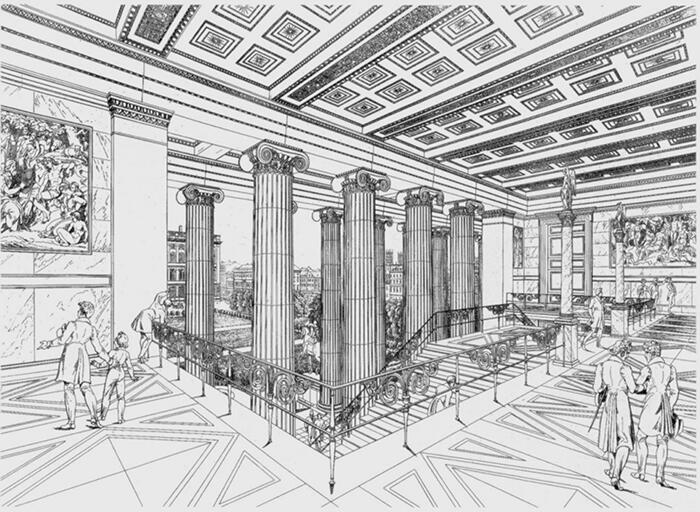
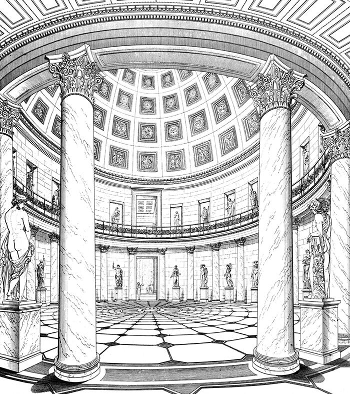
Nelle prospettive interne dell’Altes Museum, Karl Friedrich Schinkel utilizza la prospettiva come strumento di controllo e verifica dell’esperienza spaziale. A differenza della tradizione vedutistica o celebrativa, queste immagini non mirano a esaltare l’edificio, ma a testare la qualità percettiva dell’ordine classico che il progetto intende costruire.
La prospettiva consente di verificare la sequenza spaziale dall’ingresso alla rotonda centrale, mettendo in relazione assialità, simmetria e proporzione. Il percorso non è pensato come un semplice passaggio funzionale, ma come un’esperienza graduata: ogni avanzamento nello spazio produce una variazione controllata dei rapporti tra colonne, aperture, masse e luce. La profondità non è spettacolare né vertiginosa, ma misurata e leggibile, costruita attraverso la ripetizione ritmica degli elementi e la continuità degli assi visivi.
Un ruolo decisivo è svolto dalla luce naturale, in particolare quella zenitale della rotonda. La prospettiva permette di verificarne l’effetto non solo illuminotecnico, ma spaziale e simbolico: la luce non frammenta lo spazio, ma lo unifica, rafforzando la centralità e la chiarezza dell’impianto. L’illuminazione diventa parte integrante della costruzione percettiva dell’ordine, rendendo lo spazio comprensibile nel suo insieme e nei suoi dettagli.
In queste immagini la prospettiva non è un artificio scenografico, ma un dispositivo di controllo: serve a garantire che il sistema di relazioni — assi, campi visivi, proporzioni, direzioni — funzioni realmente nello spazio attraversato dal corpo. La rappresentazione anticipa e verifica l’esperienza del visitatore, assicurando che l’architettura mantenga coerenza tra forma, uso e percezione.
Per la scheda 8.5, Schinkel dimostra che la prospettiva può essere uno strumento rigoroso di verifica dell’esperienza: non mette in crisi lo spazio, come in Piranesi, ma ne controlla l’intelligibilità, trasformando l’ordine architettonico in esperienza percettiva stabile e condivisibile.

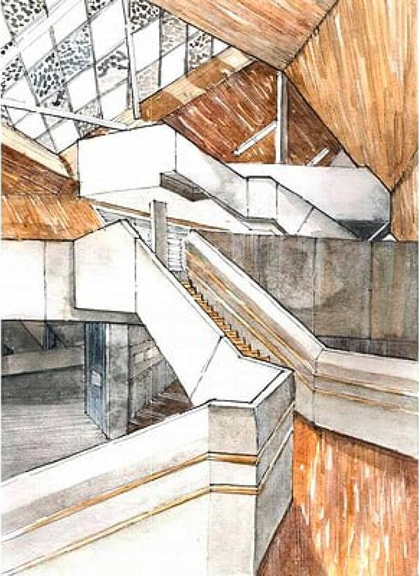
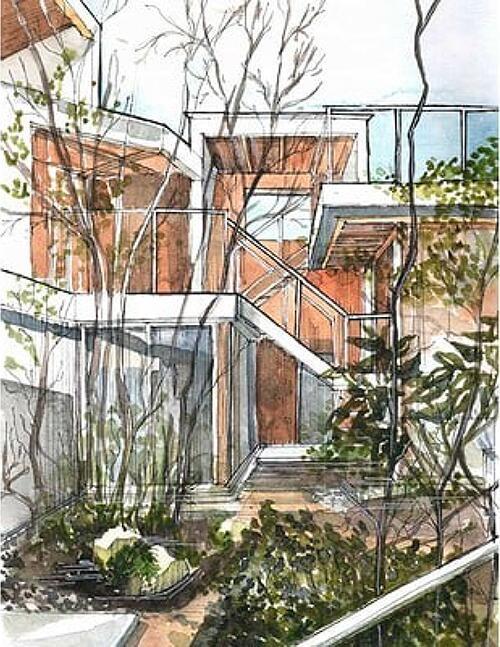
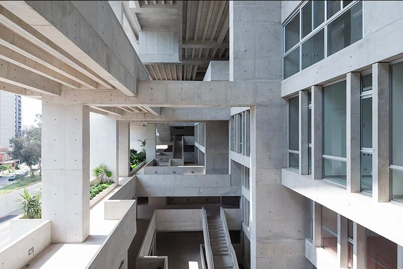
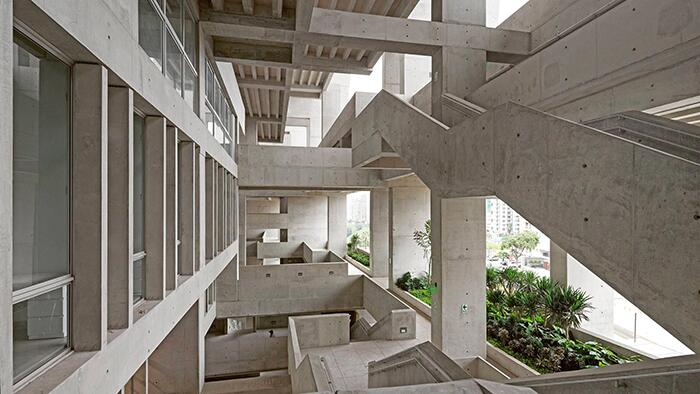
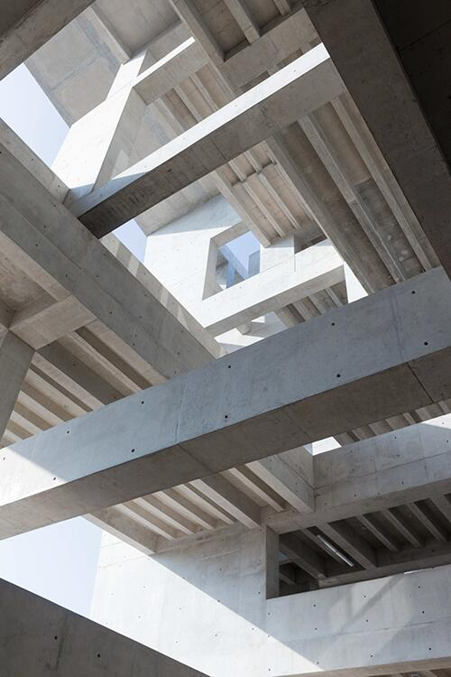
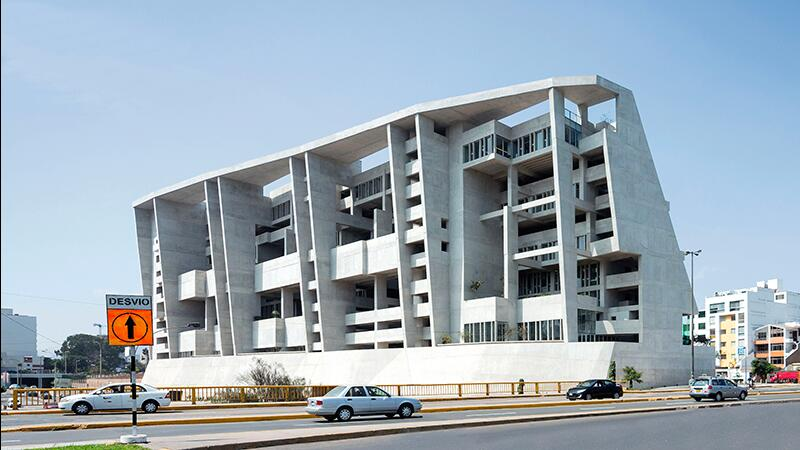
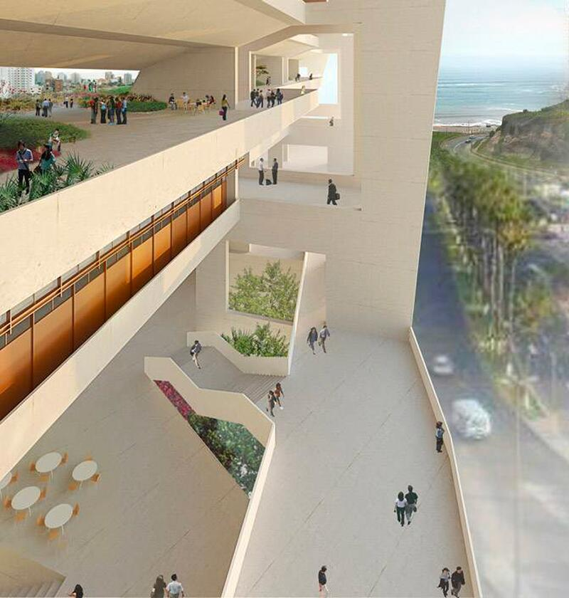
Le prospettive dei livelli-terrazza dell’UTEC di Lima non mostrano un edificio nel senso tradizionale, ma un paesaggio verticale costruito, concepito come una scogliera abitata. Grafton Architects utilizzano la prospettiva per verificare il comportamento del campo spaziale: non l’immagine della forma, ma il modo in cui luce, gravità, massa e movimento agiscono nello spazio reale.
L’edificio nasce come risposta diretta alla topografia della costa peruviana. La sezione non è un semplice dispositivo distributivo, ma il principio generativo dell’intero progetto. Le prospettive permettono di simulare l’esperienza della salita, dell’attraversamento e della sosta lungo una sequenza di terrazze, rampe e piattaforme che costruiscono una continuità tra suolo, edificio e orizzonte marino. La profondità non è frontale né centrata: è laterale, obliqua, atmosferica.
La luce gioca un ruolo decisivo in questa verifica. Non illumina in modo uniforme, ma scava lo spazio attraverso ombre profonde, contrasti netti e variazioni di intensità. Le grandi pareti in cemento non sono fondali neutri, ma masse che assorbono, riflettono e modulano la luce, rendendo percepibile il peso dello spazio e la sua scala. La prospettiva rende leggibile questa relazione dinamica tra pieno e vuoto, tra compressione e apertura.
Il movimento del corpo è il vero generatore dell’esperienza spaziale. Le rampe e i percorsi esterni non conducono semplicemente da un livello all’altro, ma costruiscono una sequenza di situazioni percettive: viste incorniciate, spazi di soglia, improvvise aperture verso il paesaggio urbano e naturale. Lo spazio si chiarisce solo nel tempo dell’attraversamento.
Per la scheda 8.5, l’UTEC dimostra che la prospettiva è uno strumento di verifica del comportamento della forma. Non rappresenta un oggetto compiuto, ma rende visibile come un sistema spaziale reagisce alla luce, alla gravità e al movimento, trasformando l’architettura in esperienza fisica e percettiva.